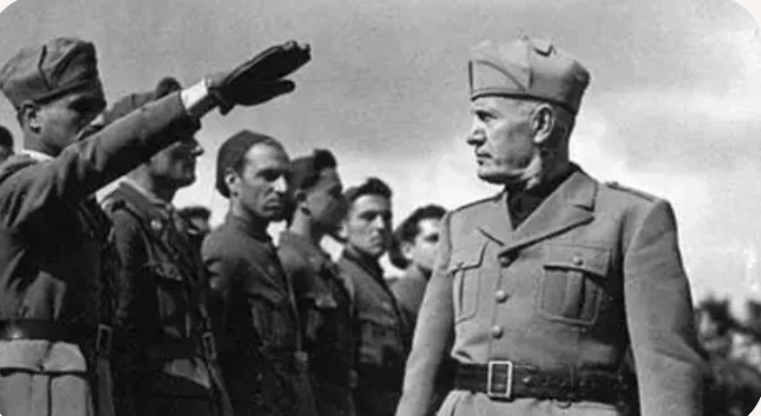

Nom : Galeazzo Ciano
Dates : 10 mars 1903 – 11 janvier 1944
Nationalité : Italienne
Fonction : Ministre des Affaires étrangères du régime fasciste
Galeazzo Ciano est l’une des figures les plus connues du régime fasciste italien. Gendre de Benito Mussolini, diplomate ambitieux, il devient ministre des Affaires étrangères et joue un rôle central dans la politique extérieure de l’Italie durant les années 1930 et le début de la Seconde Guerre mondiale. Ses journaux personnels, tenus au jour le jour, constituent aujourd’hui une source historique majeure sur le fonctionnement interne du fascisme.
Ciano participe activement aux décisions diplomatiques qui mènent l’Italie à s’allier avec l’Allemagne nazie. Il soutient l’entrée en guerre en 1940, bien qu’il exprime rapidement des doutes sur les capacités militaires italiennes et sur la stratégie de Mussolini.
En 1943, il vote au Grand Conseil du fascisme pour la destitution de Mussolini. Ce geste, considéré comme une trahison par les fascistes restés fidèles au Duce, scelle son destin : arrêté par la République sociale italienne, il est jugé et exécuté en janvier 1944.
Ciano occupe une place unique dans l’histoire du fascisme : à la fois acteur majeur du régime et témoin privilégié de ses coulisses. Son vote contre Mussolini marque un tournant décisif dans la chute du fascisme en Italie. Ses journaux, d’une valeur historique exceptionnelle, permettent de comprendre les tensions internes, les erreurs diplomatiques et les rivalités qui ont conduit l’Italie à la catastrophe.